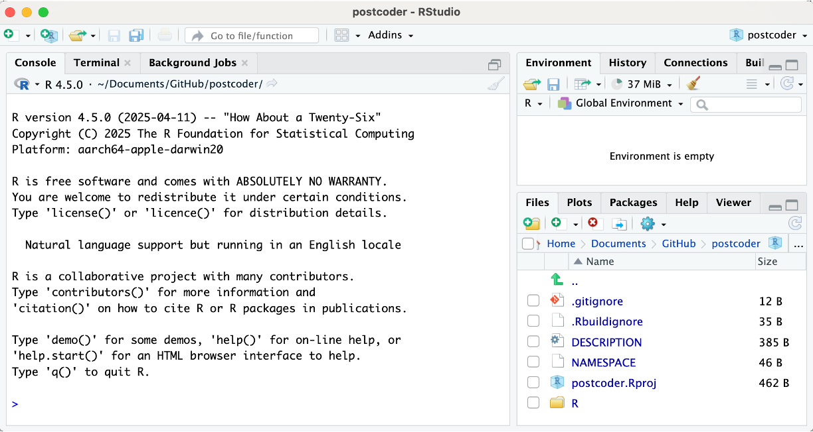
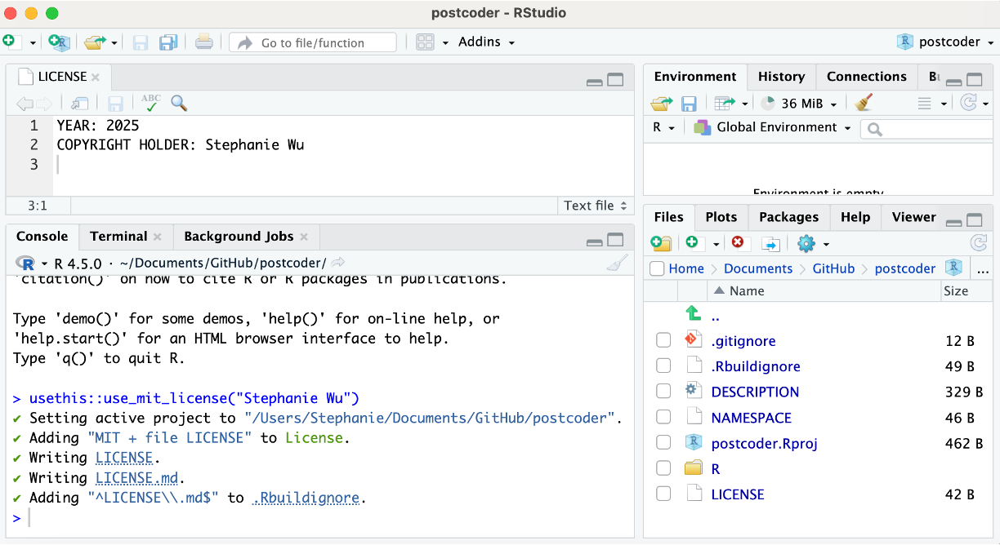
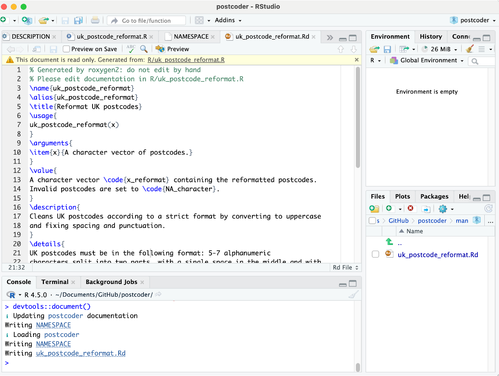
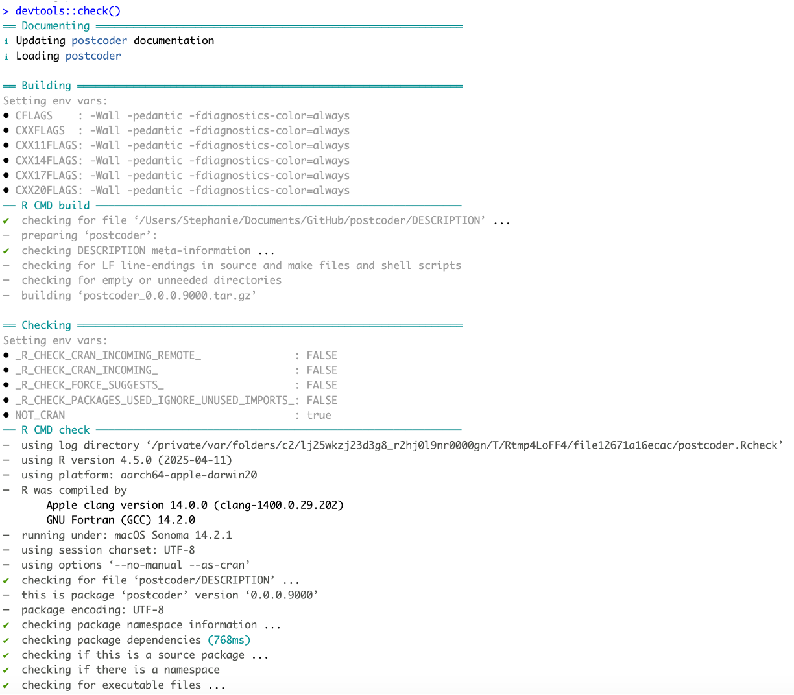
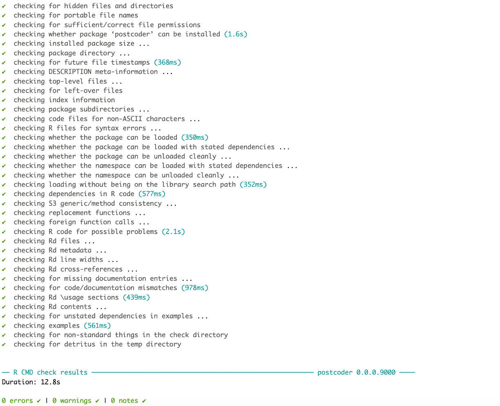
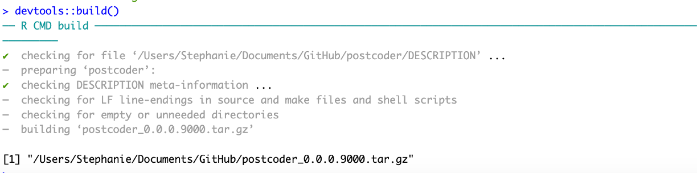
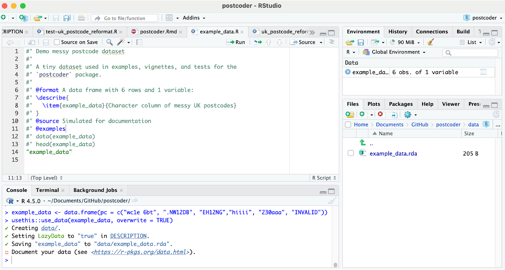

Code
# Uncomment below code to install
# install.packages(c("usethis","devtools","roxygen2","testthat","pkgdown","remotes"))
library(usethis)
library(devtools)
library(roxygen2)
library(testthat)
library(pkgdown)
library(remotes)A Tutorial for the UCL R User Group
This tutorial provides an introduction to creating, documenting, testing, and releasing an R package with the
usethis+devtoolsworkflow. As an example, we begin with a function for normalising UK postcodes, build a basic package around it, and then discuss how to add features to the package. We’ll create thepostcoderpackage, export one function, document it, check it, and publish to GitHub. A CRAN submission checklist is included.
Turning your code into an R package comes with many advantages, including:
You will want to have the following installed on your device before you start building your package from source code.
More information on installing R, RStudio, and R build tools can be found here: https://ohdsi.github.io/Hades/rSetup.html.
Please also install the usethis, devtools, roxygen2, testthat, pkgdown, and remotes packages and then load them by running the following code in RStudio:
# Uncomment below code to install
# install.packages(c("usethis","devtools","roxygen2","testthat","pkgdown","remotes"))
library(usethis)
library(devtools)
library(roxygen2)
library(testthat)
library(pkgdown)
library(remotes)For this tutorial, we’ll be using example R code that converts UK postcodes into standardised formats.
UK postcodes must be in the following format: 5-7 alphanumeric characters split into two parts, with a single space in the middle and with letters in upper case. The two parts are:
Example postcodes include “WC1E 6BT” (UCL), “NW1 2DB” (British Library), “EH1 2NG” (Edinburgh castle), and “SP4 7DE” (Stonehenge).
Oftentimes, in collected data, postcodes may appear in messy formats that need to be standardised. Here are some examples of issues that may arise and how we would want to handle them.
The following R code converts two mis-formatted postcodes (“wc1e.6bt” and “nw1-2db”) into the acceptable standardised format and also rejects an invalid postcode (“INVALID”). Since this code is vectorised, it can handle multiple postcodes at the same time.
# Example postcodes that need cleaning
x <- c("wc1e.6bt", "nw1-2db", "INVALID")
# 1) Conver to uppercase
x_upper <- toupper(x)
x_upper[1] "WC1E.6BT" "NW1-2DB" "INVALID" # 2) Remove non-alphanumeric and keep only A–Z and 0–9
x_alphnum <- stringr::str_remove_all(x_upper, "[^A-Z0-9]")
x_alphnum[1] "WC1E6BT" "NW12DB" "INVALID"# 3) Ensure a single space before inward code (last 3 chars)
# Check that postcodes are 5–7 chars (excluding the space).
n <- nchar(x_alphnum)
n[1] 7 6 7wrong_length <- n < 5 | n > 7
wrong_length[1] FALSE FALSE FALSEx_reformat <- ifelse(
!is.na(x_alphnum) & !wrong_length, # check length and not NA
paste0(substr(x_alphnum, 1, n - 3), # outward code
" ",
substr(x_alphnum, n - 2, n)), # inward code
x_alphnum)
x_reformat[1] "WC1E 6BT" "NW1 2DB" "INVA LID"# Regex expression of possible valid alphanumeric orderings for UK postcodes
strict_form <- paste0(
"^", # start of string
"(", # start of outward code
"([A-Z][0-9]{1,2})|", # letter + 1 or 2 digits
"([A-Z]{2}[0-9]{1,2})|", # 2 letters + 1 or 2 digits
"([A-Z][0-9][A-Z])|", # letter + digit + letter
"([A-Z]{2}[0-9][A-Z]?)", # 1 letters + digit + optional letter
") ", # end of outward code + space
"[0-9][A-Z]{2}", # inward code: space + digit + 2 letters
"$" # end of string
)
strict_form[1] "^(([A-Z][0-9]{1,2})|([A-Z]{2}[0-9]{1,2})|([A-Z][0-9][A-Z])|([A-Z]{2}[0-9][A-Z]?)) [0-9][A-Z]{2}$"# Check that the postcode is found inthe regex-specified orderings
valid <- grepl(strict_form, x_reformat)
valid[1] TRUE TRUE FALSE# Set invalid postcodes to NA_character_
x_reformat[wrong_length | !valid] <- NA_character_
x_reformat[1] "WC1E 6BT" "NW1 2DB" NA The first step to creating an R package is to turn your code into functions that take in parameters and perform actions. This allows you to easily perform the actions multiple times, while varying the input parameters.
We will now convert our postcode formatting code into a single function that takes in a vector of postcodes (x) and returns the re-formatted version of the vector (x_reformat).
We’ll also add in a stop function that makes sure the input is a character vector, throwing an error if not.
uk_postcode_reformat <- function(x) {
# Check input is a character vector
if (!is.character(x)) {
stop("`x` must be character vector; use as.character() first.")
}
# 1) Conver to uppercase
x_upper <- toupper(x)
x_upper
# 2) Remove non-alphanumeric and keep only A–Z and 0–9
x_alphnum <- stringr::str_remove_all(x_upper, "[^A-Z0-9]")
x_alphnum
# 3) Ensure a single space before inward code (last 3 chars)
# Check that postcodes are 5–7 chars (excluding the space).
n <- nchar(x_alphnum)
n
wrong_length <- n < 5 | n > 7
wrong_length
x_reformat <- ifelse(
!is.na(x_alphnum) & !wrong_length, # check length and not NA
paste0(substr(x_alphnum, 1, n - 3), # outward code
" ",
substr(x_alphnum, n - 2, n)), # inward code
x_alphnum)
x_reformat
# Regex expression of possible valid alphanumeric orderings for UK postcodes
strict_form <- paste0(
"^", # start of string
"(", # start of outward code
"([A-Z][0-9]{1,2})|", # letter + 1 or 2 digits
"([A-Z]{2}[0-9]{1,2})|", # 2 letters + 1 or 2 digits
"([A-Z][0-9][A-Z])|", # letter + digit + letter
"([A-Z]{2}[0-9][A-Z]?)", # 1 letters + digit + optional letter
") ", # end of outward code + space
"[0-9][A-Z]{2}", # inward code: space + digit + 2 letters
"$" # end of string
)
strict_form
# Check that the postcode is found inthe regex-specified orderings
valid <- grepl(strict_form, x_reformat)
valid
# Set invalid postcodes to NA_character_
x_reformat[wrong_length | !valid] <- NA_character_
# Return reformatted postcode
return(x_reformat)
}Once we have the function, we can easily reformat many postcodes.
example_postcodes <- c("wc1e 6bt", ".NW12DB", "EH12NG", "SP4 7DE")
example_postcodes[1] "wc1e 6bt" ".NW12DB" "EH12NG" "SP4 7DE" invalid_postcodes <- c("sw1a1aa1", " SW1AA ", "hiiii", "230aaa", "INVALID")
invalid_postcodes[1] "sw1a1aa1" " SW1AA " "hiiii" "230aaa" "INVALID" # Apply the function to reformat valid postcodes and set invalid ones to NA
uk_postcode_reformat(x = example_postcodes)[1] "WC1E 6BT" "NW1 2DB" "EH1 2NG" "SP4 7DE" uk_postcode_reformat(x = invalid_postcodes)[1] NA NA NA NA NANow, we’ll convert this function into a package called postcoder. We can use the create_package() function from the usethis package.
usethis::create_package("~/Documents/GitHub/postcoder")
# Reopen the new project when prompted
This creates a new R package project folder named postcoder at the specified path. If prompted, open the new project to ensures RStudio switches its working directory to postcoder/.

On the bottom right, we can see that the folder contains the basic structure of a valid R package:
postcoder/
├─ DESCRIPTION # Package metadata (name, version, title, authors, etc.)
├─ NAMESPACE # Manages which functions are exported/imported (auto-generated by roxygen2) ├─ postcoder.Rproj # R project for the package
├─ R/ # All .R function scriptsYou may also see .Rbuildignore (things to ignore when building the package) and .gitignore (things to ignore for GitHub).
Every R package must specify a license, so we’ll add a LICENSE file. Here we use the MIT license, which is common for permissive sharing. Other options include use_cc0_license() for public domain release. Replace my name (Stephanie Wu) with your own name as the author of the package.
usethis::use_mit_license("Stephanie Wu") 
Next, we’ll fill in DESCRIPTION file that include key metadata. Key components include:
Package → Automatically added. Package nameTitle → Short, human-readable title (must be in Title Case)Version → Package version. When choosing a version number, anything that is still in development, will typically look like 0.0.0.9000. Otherwise, fully functional packages ready for release follow a major.minor.patch output (e.g., 1.0.0), where incrementing the patch digit occurs for bug fixes, incrementing the minor digit occurs for new features or functions, and incrementing the major digit occurs if there is a significant restructuring to the package that would break previous code.Authors@R → Structured author information using person("First","Last", role = c("aut","cre"), email = "you@example.com"). Possible options for roles include author (“aut”), maintainer (“cre”), contributor (“ctb”), and/or copyright holder (“cph”).Description → A one-sentence summary of what your package doesLicense → Automatically propagated from use_mit_license().Depends → Typically used to specify minimum R version required.Imports → Packages that are depended on in the functions. Can be added with usethis::use_package("stringr", type = "Imports") for the stringr package, for example.Suggests → Optional packages, typically used for tests, vignettes, and examples.Encoding → Automatically addedRoxygen: list(markdown = TRUE) → Automatically added. Indicates that Markdown can be used in roxygen documentation notes.RoxygenNote: → Automatically added. Roxygen versionYou can edit the file directly in RStudio or Notepad.
Here’s what your DESCRIPTION file might look like after filling it out.
Package: postcoder
Title: Postcode Cleaning and Formatting Utilities for the UK
Version: 0.0.0.9000
Authors@R:
person(given = "Stephanie", family = "Wu",
email = "stephanie.wu@ucl.ac.uk",
role = c("aut", "cre"),
comment = c(ORCID = "0000-0001-5110-8407"))
Description: Provides a lightweight helper to normalise UK postcodes by
uppercasing, removing non-alphanumeric characters, inserting the
required single space before the inward code, and validating the
format against common UK postcode patterns.
License: MIT + file LICENSE
Encoding: UTF-8
Depends:
R (>= 3.5.0)
Imports:
stringr
Roxygen: list(markdown = TRUE)
RoxygenNote: 7.3.3
One of the key aspects of creating an R package is adding roxygen documentation to all of the package functions using specially formatted comments. This is then converted using devtools::document() into proper documentation help files that can be displayed when loading the package.
As a reminder, for this package, we have one main function, uk_postcode_reformat() that reformats UK postcodes into a standardised form.
To properly document this function for an R package, we need to add the following components:
@param)@return)@details)@examples)@import package_name for the whole package, or @importFrom package_name function_name for specific functions)@seealso: Linking to other related functions in the package@export). Note: it’s possible to write internal functions that you don’t want to be publicly available. To do this, simply don’t add the @export tag.Start by creating an R file with the same name as your function name within the R/ subfolder in the package. You can do this using RStudio directly or using the use_r() function, shown below.
usethis::use_r("uk_postcode_reformat")Next, past the uk_postcode_reformat() function into this R/uk_postcode_reformat.R file:
#' Reformat UK postcodes
#'
#' Cleans UK postcodes according to a strict format by converting to uppercase
#' and fixing spacing and punctuation.
#'
#' @param x A character vector of postcodes.
#'
#' @return A character vector `x_reformat` containing the reformatted postcodes.
#'
#' @details UK postcodes must be in the following format: 5-7 alphanumeric
#' characters split into two parts, with a single space in the middle and with
#' letters in upper case. The two parts are: 1) Outward code (specifies area and
#' district): 2-4 characters before the space, starting with a letter. E.g.,
#' ("WC1E", "NW1", "EH1", "SP4"); and 2) Inward code (specifies sector and unit):
#' 3 characters after the space, starting with a number. (E.g., "6BT", "2DB",
#' "2NG", "7DE").
#'
#' Example postcodes include "WC1E 6BT", "NW1 2DB", and "EH1 2NG". Oftentimes,
#' in collected data, postcodes may appear in messy formats that need to be
#' standardised, such as letters not being in uppercase, the inclusion of
#' non-alphanumeric characters such as dashes and punctuation, missing the
#' single space before the last three characters, and non-valid combinations of
#' characters and letters.
#'
#' @importFrom stringr
#'
#' @examples
#' uk_postcode_reformat(c("wc1e 6bt", ".NW12DB", "EH12NG", "SP4 7DE"))
#' uk_postcode_reformat(c("sw1a1aa1", " SW1AA ", "hiiii", "230aaa", "INVALID"))
#'
#' @export
uk_postcode_reformat <- function(x) {
# Check input is a character vector
if (!is.character(x)) {
stop("`x` must be character vector; use as.character() first.")
}
# 1) Conver to uppercase
x_upper <- toupper(x)
x_upper
# 2) Remove non-alphanumeric and keep only A–Z and 0–9
x_alphnum <- stringr::str_remove_all(x_upper, "[^A-Z0-9]")
x_alphnum
# 3) Ensure a single space before inward code (last 3 chars)
# Check that postcodes are 5–7 chars (excluding the space).
n <- nchar(x_alphnum)
n
wrong_length <- n < 5 | n > 7
wrong_length
x_reformat <- ifelse(
!is.na(x_alphnum) & !wrong_length, # check length and not NA
paste0(substr(x_alphnum, 1, n - 3), # outward code
" ",
substr(x_alphnum, n - 2, n)), # inward code
x_alphnum)
x_reformat
# Regex expression of possible valid alphanumeric orderings for UK postcodes
strict_form <- paste0(
"^", # start of string
"(", # start of outward code
"([A-Z][0-9]{1,2})|", # letter + 1 or 2 digits
"([A-Z]{2}[0-9]{1,2})|", # 2 letters + 1 or 2 digits
"([A-Z][0-9][A-Z])|", # letter + digit + letter
"([A-Z]{2}[0-9][A-Z]?)", # 1 letters + digit + optional letter
") ", # end of outward code + space
"[0-9][A-Z]{2}", # inward code: space + digit + 2 letters
"$" # end of string
)
strict_form
# Check that the postcode is found inthe regex-specified orderings
valid <- grepl(strict_form, x_reformat)
valid
# Set invalid postcodes to NA_character_
x_reformat[wrong_length | !valid] <- NA_character_
# Return reformatted postcode
return(x_reformat)
}Repeat this step for all functions in the package.
Then, run the following code to automatically generate the Rd documentation file, uk_postcode_reformat.Rd, which will be placed in the man folder. This will also automatically update the NAMESPACE file, which provides a summary of what the package exports and imports.
devtools::document()The resulting output creates a uk_postcode_reformat.Rd file within the newly created man folder, which contains all of the generated documentation files. Recall that the raw R functions are stored in the R folder. Below is an example of the generated package documentation using roxygen2 through the devtools::document() function. This file is read only because it is automatically generated.
You can also see how the generated NAMESPACE file now includes the exported function. This file is also read only because it is automatically generated.

We can check that the function and documentation are working properly by running the load_all() function to load all of the functions in the package. Then, we try out our newly created uk_postcode_reformat function within the package. Lastly, we use ?uk_postcode_reformat to examine the help page for the function, which contains all of the newly created documentation.
devtools::load_all()
uk_postcode_reformat(c("sw1a1aa", " SW1A-1AA ", "EC1A1BB"))
?uk_postcode_reformat
To make sure the package is functioning properly and is suitable for uploading to CRAN, we use the check() function to check for errors, warnings, and notes. To be sure that there are no errors, you can also check the package on the released version of R on windows (check_win_release()), the development version of R on windows (check_win_devel()), and the released version of R on macOS (check_mac_release()).
devtools::check() 
If it shows 0 ERRORS, 0 WARNINGS, and 0 NOTES, then your package is now ready to be built. You can build your package using the build() function.
devtools::build() This will create a .tar.gz file containing your package name and version, which can be installed from source. This means that any computer that has this .tar.gz file will be able to install the package using the install.packages() function, specifying that type = "source" and making sure the file location is correct.
install.packages("/Users/Stephanie/Documents/GitHub/postcoder_0.0.0.9000.tar.gz", repos = NULL, type = "source")
To submit a package to CRAN and make it publicly available, simply upload this .tar.gz file to the CRAN submission form (https://cran.r-project.org/submit.html). You will be prompted to fill in your details and double check all of the information provided in the DESCRIPTION file. The last step is to confirm submission.

This check list for CRAN submissions is also helpful for checking that your package works on multiple platforms and versions of R: https://cran.r-project.org/web/packages/submission_checklist.html.
Typically, there will be an automatic review to make sure the package passes all checks without errors, warnings, and notes. Once this happens, there will be a manual review, where you may receive an email requesting changes to your package.
Once you have made all the necessary changes, you will get an email confirming that the package is on CRAN, after which anyone will be able to install it with install.packages(postcoder) and use the functions inside.
You may also want to publish your package in a journal. Some journal options include:
These upgrades are independent—add them when you need them.
testthat)Adding unit tests to your package is a great way to make sure that your functions are running properly. These tests allow you to describe what a function is expected to do, including catching errors, warnings, and messaages. These tests will be run automatically every time you run check(). The testing chapter in the R Packages tutorial provides advice and examples for creating a test suite.
To create tests, simply run use_testthat() to create the test folder that contains the testthat/ subfolder for storing the tests, as well as the testthat.R function for set up. This will also add testthat to the “Suggests” field in the DESCRIPTION file.
usethis::use_testthat()
Then, create a test file for the package function(s) (e.g., uk_postcode_reformat()) using the function use_test(). This will create a file in tests/testthat/ titled test-uk_postcode_reformat.R and initialize it with a toy example.
usethis::use_test("uk_postcode_reformat")You can now modify this file to include any tests that would be helpful for making sure your function works properly. It’s good practice to try to include some edge cases, including expected errors and NAs. Below is an example of possible tests to add for test-uk_postcode_reformat.R, including checking basic normalisation, already-formatted postcodes, invalid formats, NAs and empty strings, vectorisation of outputs, expected errors, capitalisation, and non-alphanumeric characters.
To test that the output of your function matches what you would expect, you can use the following functions that allow you to input the expected output:
expect_equal(fn_output, expected_output)expect_error(fn_with_input, expected_error_message)expect_true(expected_true_boolean) (e.g., is.na(out[1]))expect_length(fn_output, expected_length)expect_identical(fn_output, expected_matching_output)# tests/testthat/test-postcode.R
test_that("basic normalisation works (case, junk removal, spacing)", {
x <- c("wc1e 6bt", ".NW12DB", "EH12NG", "SP4 7DE")
out <- uk_postcode_reformat(x)
expect_equal(out, c("WC1E 6BT", "NW1 2DB", "EH1 2NG", "SP4 7DE"))
})
test_that("already-formatted postcodes are unchanged", {
x <- c("SW1A 1AA", "W1A 0AX", "M1 1AE")
out <- uk_postcode_reformat(x)
expect_equal(out, x)
})
test_that("invalid formats become NA (strict format validation)", {
# wrong length after cleaning
too_short <- "A1A" # < 5
too_long <- "EC1A11BBB" # > 7 after cleaning
# invalid outward/inward shapes
bad_mix <- "EC1A1B" # inward is only 2 chars after space
wrong_ord <- "123 ABC" # outward must start with a letter
weird <- "ABCD 123" # inward must be digit + 2 letters
x <- c(too_short, too_long, bad_mix, wrong_ord, weird)
out <- uk_postcode_reformat(x)
expect_true(all(is.na(out)))
})
test_that("NA and empty strings are handled", {
x <- c(NA, "", " ")
out <- uk_postcode_reformat(x)
expect_true(is.na(out[1]))
expect_true(is.na(out[2]))
expect_true(is.na(out[3]))
})
test_that("vectorisation: outputs align with inputs", {
x <- c("SE1P0AB", "EC1A1BB", "BAD")
out <- uk_postcode_reformat(x)
expect_length(out, length(x))
expect_identical(out[1], "SE1P 0AB")
expect_identical(out[2], "EC1A 1BB")
expect_true(is.na(out[3]))
})
test_that("errors for non-character inputs", {
expect_error(uk_postcode_reformat(123), "`x` must be character vector")
expect_error(uk_postcode_reformat(list("SW1A 1AA")), "`x` must be character vector")
})
test_that("handles lower/upper/mixed case consistently", {
x <- c("sw1a1aa", "Sw1A1aA", "SW1A1AA")
out <- uk_postcode_reformat(x)
expect_equal(unique(out), "SW1A 1AA")
})
test_that("strips non-alphanumeric characters correctly", {
x <- c("SE-1P_0AB", "E C 1 A - 1 B B", "W1A-0AX!")
out <- uk_postcode_reformat(x)
expect_equal(out, c("SE1P 0AB", "EC1A 1BB", "W1A 0AX"))
})You can then run the tests by clicking the “Run Tests” button in the top right of the file, or by using the devtools::test() function. Ideally, you should see that all of the tests have passed.
devtools::test()
You can also store built-in datasets in your package to provide examples for functions. These will be put in the data/ folder. It is recommended that each file in this folder is an .rda file created by the save() function, containing an R object with the same name as the file.
This can be done with the usethis::use_data() function, inputting in the data that you wish to store. If you would like the data to be overwritten when regenerated, include overwrite = TRUE as an argument. The use_data_raw() function can be used as an alternative if you want to distinguish between raw and cleaned data.
# e.g., 6-row demo of messy and invalid postcodes for the vignette
example_data <- data.frame(pc = c("wc1e 6bt", ".NW12DB", "EH12NG","hiiii", "230aaa", "INVALID"))
usethis::use_data(example_data, overwrite = TRUE)This will also prompt you to document your data, following the guidelines at https://r-pkgs.org/data.html.
To document our data, we create an example.R file within the R/ folder and add the following information:
@format). This should contain a list describing each variable.@source), often a URL or specified to be via simulation.@examples)Datasets should NOT be exported with @export because they are automatically exported using a different process.
#' Demo messy postcode dataset
#'
#' A tiny dataset used in examples, vignettes, and tests for the
#' `postcoder` package.
#'
#' @format A data frame with 6 rows and 1 variable:
#' \describe{
#' \item{example_data}{Character column of messy UK postcodes}
#' }
#' @source Simulated for documentation
#' @examples
#' data(example_data)
#' head(example_data)
"example_data"In the below output, we can see that the example_data object was created and saved as example_data.rda in the data/ folder. We have also created documentation for the dataset in R/example_data.R.

Then, run devtools::document() to make sure the dataset is documented. You should see “Writing example_data.Rd” as an output. This will also give the dataset a help page that can be accessed with ?example_data.
Many packages include vignettes to help introduce users to the package. Vignettes are R Markdown documents that are meant to help users know how to use the functions in the package. They will be installed alongside the package and are meant to be fast and reproducible. Heavy chunks of code can be cached to speed up runtime by setting cache = TRUE in the chunk options.
To create a vignette, use the usethis::use_vignette() function with the name of the vignette file. Oftentimes, packages will have a main introductory vignette that has the same name as the package, along with potential additional vignettes that explain more complex functionality.
Initialising a vignette will create the vignettes/ folder containing the specified Rmd file: postcoder.Rmd. By default, it will also add knitr and rmarkdown to the Suggests field in the DESCRIPTION file, as well as specify knitr as the vignette builder engine.
usethis::use_vignette("postcoder")You can then populate the vignette file with sections such as introduction, installation, function usage, etc.
Note: in the below file, please replace all instances of === with ``` when creating the actual vignette .Rmd file.

---
title: "Getting started with postcoder"
date: "`r format(Sys.Date())`"
output:
rmarkdown::html_vignette:
number_sections: true
toc: true
df_print: "paged"
vignette: >
%\VignetteIndexEntry{postcoder}
%\VignetteEngine{knitr::rmarkdown}
%\VignetteEncoding{UTF-8}
---
# Introduction
The `postcoder` package provides functions to convert UK postcodes into standardised formats.
UK postcodes must be in the following format: 5-7 alphanumeric characters split into two parts, with a single space in the middle and with letters in upper case. The two parts are: - *Outward code* (specifies area and district): 2-4 characters before the space, starting with a letter. E.g., ("WC1E", "NW1", "EH1", "SP4") - *Inward code* (specifies sector and unit): 3 characters after the space, starting with a number. (E.g., "6BT", "2DB", "2NG", "7DE").
Example postcodes include "WC1E 6BT", "NW1 2DB", and "EH1 2NG". Oftentimes,
in collected data, postcodes may appear in messy formats that need to be
standardised, such as letters not being in uppercase, the inclusion of
non-alphanumeric characters such as dashes and punctuation, missing the
single space before the last three characters, and non-valid combinations of
characters and letters.
`postcoder` contains one main function, `uk_postcode_reformat()`, which cleans postcodes by applying the following reformatting steps:
1. Convert to uppercase
2. Remove non-alphanumeric characteris
3. Insert a single space before the inward code (last 3 characters)
4. Validate the format, with invalid inputs becoming `NA_character`.
The vignette shows installation and basic usage.
# Installation
The package can be installed using the options below.
==={r vig_isntall, eval = FALSE}
# From CRAN
install.packages("postcoder")
# From Github
remotes::install_github("smwu/postcoder")
# From source
install.packages("~/postcoder_0.0.0.9000.tar.gz", repos = NULL, type = "source")
===
==={r vig_load, echo = FALSE}
# Loading the package under the hood for the vignette
devtools::load_all()
===
==={r vig_setup}
library(postcoder)
===
# Example functionality
The `uk_postcode_reformat()` function takes in a character vector of UK postcodes that need to be reformatted. It returns a character vector containing the reformatted postcodes, with invalid postcodes set to `NA_character`.
==={r vig_usage}
# Load in the example package data
data(example_data)
# View the data
example_data
# Convert to character vector
input <- as.character(example_data$pc)
input
# Clean the postcodes
uk_postcode_reformat(input)
===
We obtained the following transformations of the input postcodes:
- "wc1e 6bt" -> "WC1E 6BT" (capitalised)
- ".NW12DB" -> "NW1 2DB" (punctuation removed and space added)
- "EH12ND" -> "EH1 2ND" (space added)
- "hiiii" -> NA (invalid format)
- "230aaa" -> NA (invalid sequence of numbers and letters)
- "INVALID" -> NA (invalid format)Click on Knit to render the vignette into a vignette document.

It is recommended to also re-run devtools::check() to make sure your package still works.
usethis::use_citation()Creates a template inst/CITATION file. Add in the citation information into the file and save changes.
citHeader("To cite the postcoder R package in publications, please use:")
bibentry(
bibtype = "Manual",
title = "postcoder: Postcode Cleaning and Formatting Utilities for the UK",
author = person(given = "Stephanie", family = "Wu",
email = "stephanie.wu@ucl.ac.uk",
role = c("aut", "cre")),
year = "2025",
note = "R package version 0.0.0.9000",
url = "https://github.com/smwu/postcoder",
textVersion = paste(
"Wu, S. (2025). postcoder: Postcode Cleaning and Formatting Utilities for the UK",
"(R package version 0.1.0). Available at https://github.com/smwu/postcoder"
)
)You can then check the citation output.
citation("postcoder")
You can also initialise version control with Git and GitHub so you can track changes and store them in a remote repository. Use usethis::use_git() to initialise a local Git repository for your project, and usethis::use_github() to connect the local repository to a new remote repository on GitHub, performing an initial push. Agree to adding commits and to restarting RStudio.
usethis::use_git()
usethis::use_github()Note: you’ll need to have Git and GitHub configured locally. Click on the call out box for more information.
How to set up GitHub:
1. Create a GitHub account: https://github.com/signup.
2. Download GitHub Desktop: https://desktop.github.com/download/.
3. Open GitHub Desktop and link your account. More detailed instructions can be found here: https://docs.github.com/en/desktop/overview/getting-started-with-github-desktop.
4. Now you can clone the repository. In GitHub Desktop, go to File -> Clone Repository. Click on the “URL” tab.
5. Navigate back to this repository and click on the green “<> Code” button in the top right corner. Click on the “HTTPS” tab and copy the web URL.
6. Paste the URL into GitHub Desktop. Under “Local Path”, you can choose where you want the cloned repository to be stored on your local computer.
7. Click “Clone”.
8. Now, you can make edits to the repository locally and the changes will be displayed in GitHub Desktop. Once you’ve reviewed your changes, you can write a commit message and commit your changes by clicking on the blue “Commit” button. More detailed instructions on committing your changes can be found here: https://docs.github.com/en/desktop/making-changes-in-a-branch/committing-and-reviewing-changes-to-your-project-in-github-desktop.
9. You can then push your changes to the remote repository. You will first want to pull in any updates that have occurred in the repo by clicking on the “Fetch origin” button in the top right corner. by clicking on “Push origin” in the top right corner.
If you want to experiment with code changes and isolate your development work from the main branch in the repository, you can also create a separate branch. More information can be found here: https://docs.github.com/en/desktop/making-changes-in-a-branch/managing-branches-in-github-desktop.
You now have a repeatable workflow to take a function from a script to a shareable, documented, and tested R package!
Start simple, keep examples fast, and add features (tests, data, CI, website, CRAN) as your needs grow. Small, well‑scoped packages are easier to maintain and much easier for collaborators to use.
Here is a summary of the final workflow
Here are some additional resources that may be helpful:
R Packages (2e): Wickham & Bryan:https://r-pkgs.org
usethis:https://usethis.r-lib.org
devtools:https://devtools.r-lib.org
roxygen2:https://roxygen2.r-lib.org
testthat:https://testthat.r-lib.org
pkgdown:https://pkgdown.r-lib.org
Writing R Extensions(CRAN manual):https://cran.r-project.org/doc/manuals/r-release/R-exts.html
CRAN Repository Policy:https://cran.r-project.org/web/packages/policies.html
GitHub Actions for R:https://github.com/r-lib/actions
Quarto documentation:https://quarto.org